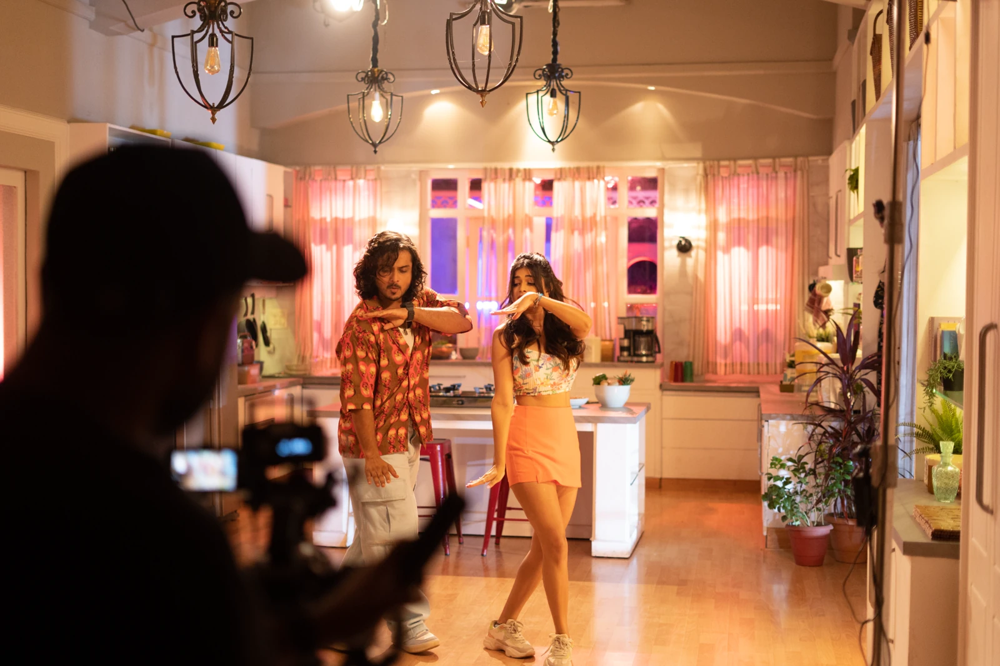

2016–2025Building
Building
our craft.
Our journey began with a short film in 2016. In the years that followed, we worked across corporate films, music videos, animation, and feature-film writing. We were building our craft while finding our way towards stories of our own.
01 — 03